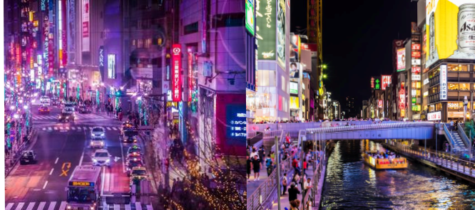
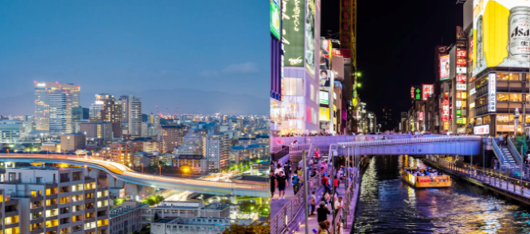
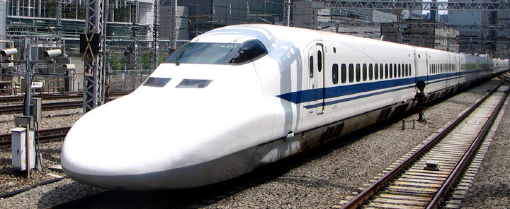

BURAJIRU-EKI


Nozomi
Tokaido Line (Sem JR Pass)
Reserve agora passagens que circulam entre as estações de Tokyo e Shin-Osaka, em um trajeto que dura aproximadamente 2 horas e 20 minutos.
Mizuho
Sanyo Line (Sem JR Pass)
Reserve agora passagens que circulam entre as estações de Hakata e Shin-Osaka, em um trajeto que dura aproximadamente 2 horas e 30 minutos.
Reserve agora sua passagem de Shinkansen!
Escolha a data, o horário e o ponto de partida para ver as opções disponíveis para cada destino.

Rápido
Em poucos cliques, você terá sua passagem de Shinkansen garantida!
Evite Filas
Comprando sua passagem aqui, livre-se de filas e possíveis atrasos!
JR Pass
Válido no Japão inteiro, utilize o sistema ferroviário quantas vezes for necessário!